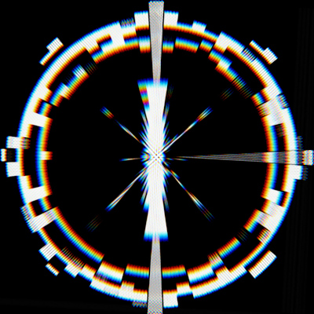

THE
INSYNCHRONOUS
AGENCY
You are members of The Insynchronous Agency, a top-secret need-to-know hyphen-laden organisation that deals with INSYNCHRONOUS MATERIALS.
THE MATERIALS
- Shards of broken mirror that show the future (you don't want to see it...)
- Oil that interrupts gravity when dripped onto the ground (don't slip!)
- A singing bowl that adjusts the Planck Constant for the duration it sounds (for the love of god don't ring it!)
THE AGENCY
Are known by many names:
- The Syndicate
- The Elders
- The Consortium
- The Group
- The High Table
- etc
Whatever they are in your game, you work for them, and they sign your paycheques.
The Insynchronous Agency has a number of responsibilities and interests. Those that are relevant for gameplay are:
CONTAIN
INSYNCHRONOUS MATERIALS represent a danger to the public that must be contained.
CATALOGUE
INSYNCHRONOUS MATERIALS represent an asset that must be catalogued.
CONCEAL
INSYNCHRONOUS MATERIALS represent an identification to THE ENEMY, and must be concealed from the public record.
THE ENEMY
THE ENEMY is unknowably intelligent, incomprehensibly powerful, and invulnerably distant. Their exact nature is a topic of some debate, but what little we know suggests some kind of far-future superintelligence:
Possibly a runaway AI singularity, possibly advanced alien life, or, the most grim explanation, possibly a far-future human civilisation so unlike us that their own past is contemptible to them.
Whatever the nature of THE ENEMY is, it has the ability to cast its will backwards through time and alter our reality.
As either a blessing or a curse, it appears to be inaccurate or random in its actions, neither always harming our world nor always helping.
It is the current belief of director REDACTED that THE ENEMY experiences time as we humans experience space, and is flailing across it, desperately seeking to be born.
THE GAME
Draw 5 cards and randomise the complications on the way to the Materials.
- Each of the 5 challenges, one of the AGENTS must gamble their ATTRIBUTES, explain how it will help
- player on their right contributes a sensory details
- player on their left contributes a problem or conflict
- play the challenge scene until it reaches a crucial point, then draw a card from minor arcana
- 2-5 catastrophe, you lose your ATTRIBUTE AND the GM deals a new challenge card in its place
- 6-9 fail: you lose your ATTRIBUTE, but the AGENTS may try again, gambling another ATTRIBUTE
- 10 or court card: suceed! major arcana challenge card is removed and given to you as a new ATTRIBUTE
- If you have no ATTRIBUTES left, you have yourself. Gamble yourself, and you die.
When you have removed all the major arcana from the path, you have reached the INSYNCHRONOUS MATERIALS. bag'em and tag'em, avoid the press, and head back to the lab.
If you run out of major arcana cards, the AGENTS have failed. Discuss with the group what this means for you, and for humanity.
MAKING CAMP
- Each AGENT holds a conversation with one or more other AGENTS, reavling something important about themselves, strengthening your connection, or making promises.
- They then may regain a lost ATTRIBUTE.
- This ATTRIBUTE may come back changed, as makes sense for the story
- Every night you rest, the challenge increases, the INSYNCHRONOUS MATERIALS spill out into the world a little more: Add another challenge card to the current investigation.
ENDING THE JOURNEY
You have bested all the challenges on the way to the INSYNCHRONOUS MATERIALS, but now what?
- Were all AGENTS able to handle the INSYNCHRONOUS MATERIALS safely, both physically and mentally?
- Which of the AGENTS sacrificed something while collecting the INSYNCHRONOUS MATERIALS?
- What lasting effects will the AGENTS never shrug off?
- Which of the AGENTS will never return?